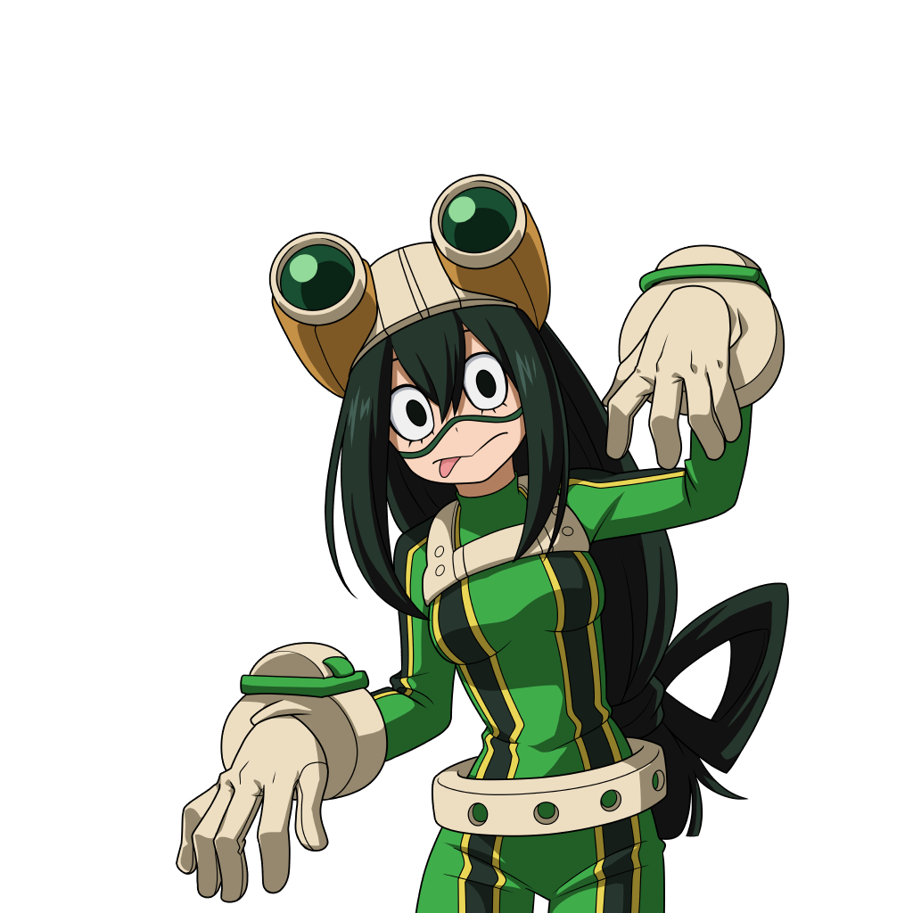
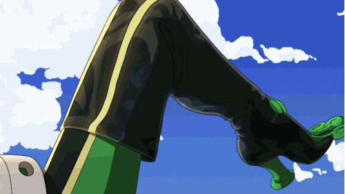

Su informacion principal
Nombre: Tsuyu Asui
Quirk: Rana
El Quirk de Tsuyu le otorga las distintas habilidades y características de una rana
Wiki con informacion mas detallada de Tsuyu AsuiEl Quirk de Tsuyu le otorga las distintas habilidades y características de una rana
Wiki con informacion mas detallada de Tsuyu AsuiExtiende la lengua para atacar al enemigo.
Si se usa en el aire, puede engancharse y moverse por los muros.
Ataque de largo alcance con la lengua que realiza un barrido de lado a lado.
Si se usa en el aire, el ataque se convierte en un golpe vertical.
Hace invisible su cuerpo con colores de camuflaje. Se desactiva al atacar o recibir daño.
Ataque de largo alcance con la lengua que realiza un barrido de lado a lado.
También puede desactivarse la invisibilización al volverse a usar.
Agarra a un aliado abatido con la lengua y lo reanima instantaneamente.

| Habilidad | Daño | Cargas |
|---|---|---|
| Alpha | 76,5 | 3 |
| Beta | 104,5 | 3 |
| Gamma | 0 | 100%(x2) |
| Especial | 0 | 1 |